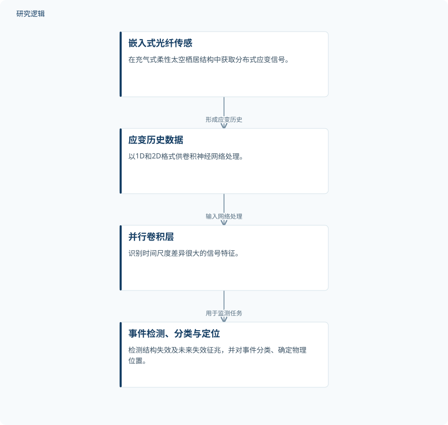

摘要解读
机器学习用于充气结构光纤健康监测中的异常检测与分类
Machine learning applied to fiber optic SHM of inflatable structures for anomaly detection and classification
解读更新 2026-11-10 11:34 · 依据公开摘要整理，未核验全文细节
充气式太空栖居结构的柔性约束层，既可能发生突发损伤，也会随时间出现蠕变。如何从连续应变信号中识别损伤、判断类型并定位，是这项研究的核心问题。本文依据摘要，解读分布式光纤传感与卷积神经网络如何协同开展结构健康监测。
文章目录
柔性约束层需要监测的不只是断裂
对充气式柔性太空栖居结构而言，结构健康监测不仅要发现已经发生的失效，还要识别约束层材料未来失效的征兆。摘要将蠕变演化、动态损伤事件和整体结构完整性共同纳入监测目标，关注的是结构随时间发生的变化，而非单一时刻的状态。
从分布式应变历史中提取不同时间尺度的特征
研究使用嵌入结构的光纤传感器获取分布式应变数据，沿每根传感器的数据间距为2.6 mm。模型训练数据来自NASA约翰逊航天中心开展的三分之一尺度充气结构蠕变试验，该试验采用了航天级材料与制造工艺。
作者设计卷积神经网络（CNN），处理1D和2D格式的应变历史数据，并在网络内部使用并行卷积层，识别时间尺度差异很大的特征。摘要明确给出的处理目标包括事件检测、事件分类，以及确定结构事件的物理位置。
依据摘要整理的光纤应变监测流程


仅概括摘要明确陈述的传感、数据处理与监测输出关系，不代表论文原图，也不补充未报告的实验配置。
下载 SVG图示关系说明
实线表示相邻阶段的信息流，虚线表示跨阶段联系或反馈。
嵌入式光纤传感 → 应变历史数据：形成应变历史；应变历史数据 → 并行卷积层：输入网络处理；并行卷积层 → 事件检测、分类与定位：用于监测任务
摘要报告准确率，但未拆分各项任务表现
摘要列出的识别对象包括纱线和带条断裂事件、持续性损伤、压力下降，以及指示即将爆裂的蠕变趋势异常。这些对象同时涉及突发事件、持续损伤状态与缓慢演化趋势，体现了该方法所覆盖的监测内容。
作者报告CNN模型的准确率达到99.6%或更高。不过，摘要没有说明该准确率具体对应哪些任务、类别或数据划分，因此不能据此认定每类异常、每项定位任务都达到了相同水平，也不能将异常征兆识别等同于已经验证的爆裂时间预测。
高准确率的适用边界仍需查阅全文
当前摘要未报告独立试件数量、事件样本规模、类别分布，以及训练与测试数据如何划分，因而无法判断结果对不同试件和工况的泛化范围。它也未提供定位误差、预警提前量或各类别误报与漏报情况；这些属于摘要无法回答的问题，不代表论文没有开展相关分析。
摘要中的空间部署优势属于作者的判断。仅凭当前资料，无法核实其比较方法、比较条件及实际空间环境验证范围，不能将地面尺度试验中的结果直接表述为已完成在轨应用验证。
阅读启发：把事件识别与失效预警分开理解
阅读启发：这项工作的关注点，是让连续应变记录同时服务于损伤事件识别和结构演化监测。进一步阅读时，值得重点核对不同异常的标签定义、并行卷积层如何对应不同时间尺度，以及蠕变异常与后续失效之间的证据关系，再判断其对智能运维决策的实际支持程度。
以上为本站阅读启发与建议，不是论文已验证的结论。